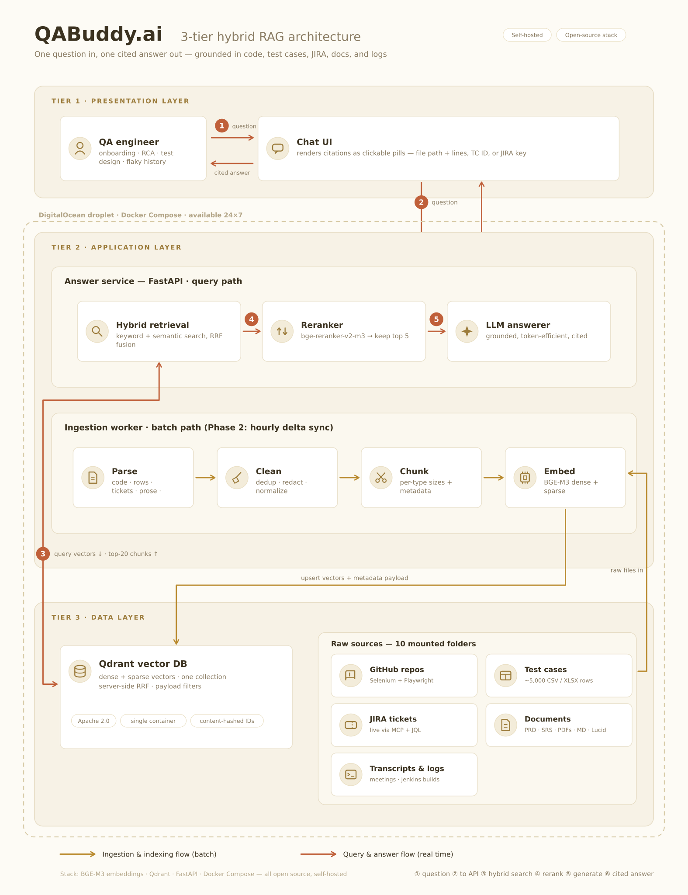
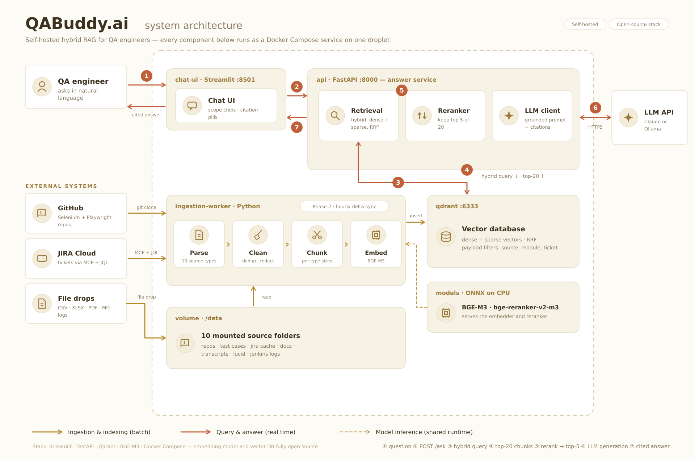

Ask a question, receive a single citation-backed answer grounded in your team's QA knowledge — the Selenium & Playwright frameworks, ~5,000 test cases, JIRA (QAB), product requirements, meeting notes, and Jenkins logs.
LIVE https://qabuddyweb.vercel.app
1 · What it is
QA Buddy is a hybrid-RAG QA knowledge assistant, defined by the QABuddy Enterprise Requirement Document across 12 knowledge sources. The shipped web app presents that knowledge base as a left sidebar of toggleable sources and answers questions with inline citations. This document explains how the answer is produced and how the system is deployed.
2 · How an answer is fetched
3 · System architecture
Three tiers — presentation, application (answer service + ingestion worker), and data (vector DB + raw sources).


4 · Backend (as shipped) — real hybrid RAG
The Vercel serverless route forwards to a FastAPI answer service that runs the full retrieval pipeline. Answers are grounded in retrieved chunks, and citations point to the actual source files — not model memory.
Request flow
Browser (React UI)
│ POST /api/chat { messages, scope, system }
▼
Vercel serverless route (app/api/chat/route.ts)
│ forwards to RAG_BACKEND_URL
▼
FastAPI answer service (backend/rag_app.py)
│ ① embed query (dense bge-small + sparse bm25, ONNX/CPU)
│ ② Qdrant hybrid search → top-K each branch
│ ③ Reciprocal Rank Fusion (RRF)
│ ④ cross-encoder rerank (MiniLM) → keep top-5
│ ⑤ grounded prompt → Groq (llama-3.3-70b)
▼
cited answer + structured sources → UI citation pillsComponents
Qdrant (embedded local mode, no Docker) stores dense + sparse vectors in one
collection. fastembed serves the embedder and reranker as ONNX models on CPU.
Ingestion (backend/ingest.py) parses data/<source>/…,
chunks, embeds, and upserts — with a source payload so the UI's scope toggles
filter retrieval. The LLM is Groq (OpenAI-compatible; free tier, no Anthropic dependency).
RAG_BACKEND_URL in Vercel points the web app at it.
CPU-friendly models (bge-small / bm25 / MiniLM) stand in for BGE-M3 / bge-reranker-v2-m3 —
a one-env-var swap on a GPU host restores the exact reference models.
Backend comparison
| Aspect | Before | After |
|---|---|---|
| Provider | Anthropic API | Groq API |
| Model | claude-sonnet-* | llama-3.3-70b-versatile |
| Client | @anthropic-ai/sdk | OpenAI-compatible fetch |
| Cost | paid credits (was $0 → blocked) | free tier |
| Env var | ANTHROPIC_API_KEY | GROQ_API_KEY |
5 · Deployment
| Concern | Choice |
|---|---|
| Host | Vercel (static UI + serverless /api/chat) |
| Framework | Next.js 14 App Router · React 18 · TypeScript |
| Secrets | GROQ_API_KEY in Vercel project env (Production) |
| Public access | Deployment Protection → Vercel Authentication = Off |
| Stable URL | qabuddyweb.vercel.app |
6 · Knowledge sources (12)
Selenium repo · Playwright repo · VWO project · Test cases (~5,000) · JIRA (QAB) · Company docs · Figma · Meeting notes · Lucid charts · Requirements (PRD/BRD/FRD/SRS) · Jenkins · Swagger. Each is a toggle in the sidebar; the in-scope set is injected into the grounding prompt for every question.